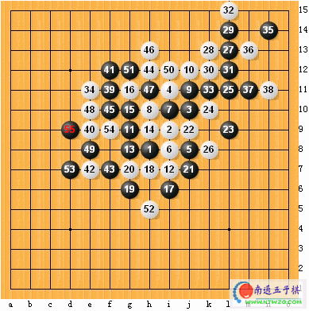
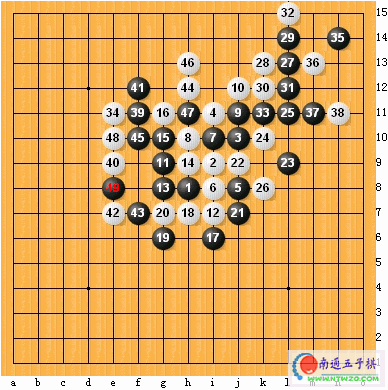

这个49手是禁手点吗？
首页
裁判&规则
#1 这个49手是禁手点吗？ 作者：SONY 发表时间：2006-3-21 20:35:40
这是我在qq上与裁决殿考官的一盘对局在第49手时对方认为是禁手可实际不是我知道有假禁手之说但不是理解的太透彻请教版主为什么这步不是禁手谢谢了：） RenLib00001.txt
RenLib00001.txt［ 有志青年 于 2006-4-25 20:59:39 时奖励此帖[金币加 20 ］
［此帖子已被 有志青年 在 2012-2-9 13:36:47 编辑过］
#2 替楼主将图打出来 作者：有志青年 发表时间：2006-3-22 10:22:00
全局棋谱

有争议的49手

#3 Re:这个49手是禁手点吗？ 作者：横刀啸天下 发表时间：2006-3-22 10:56:09
四四解三三
#4 Re:这个49手是禁手点吗？ 作者：江南新绿 发表时间：2006-3-22 14:29:33
只有 一个活三,自然不是禁手
#5 Re:这个49手是禁手点吗？ 作者：江风 发表时间：2006-3-22 19:50:37
我认为是禁手
#6 这个49手是禁手点吗？答：是禁手 作者：莲子 发表时间：2006-3-22 22:00:02
我们先来看第一层次：黑49点造成了49－43－19和49－15－47两个活三，所以是双活三，是禁手；
我们深入分析一下：49－43－19这个活三没有疑义，问题是49－15－47这个活三的f9点，若黑走这一点就是四四，所以，黑不能走这一点来使49－15－47这个三变成四以至于取胜，所以可以认定这个不是活三，而是眠三，因此结果是49点不是禁手；
继续分析一下：若黑放f9是四四吗？49－f9－15－47是活四，这个没有争议；41－39－45－f9－xx－43是活四吗？这条线能够取胜吗？是个长连吧！嗯，本身是个长连禁手，这样倒推过去，f9不是禁手点，不会形成四四，所以49点是禁手点会形成三三！
结果是禁手点！
#7 Re:这个49手是禁手点吗？ 作者：莲子 发表时间：2006-3-22 22:17:04
我错了。错了就要改
f9本身就是四四禁手点！这里涉及不到长连问题。
我改过，49点不是禁手点。
各位大大，不是我出尔反尔，是我刚由棋魂兄帮我洗清了脑子，终于想通了。
#8 Re:这个49手是禁手点吗？ 作者：qq4114 发表时间：2006-4-5 13:59:15
受教了
#9 Re:这个49手是禁手点吗？ 作者：qq4114 发表时间：2006-4-5 14:06:31
可是为什么 我用软件下，这些算是禁手呢，晕忽忽
#10 Re:这个49手是禁手点吗？ 作者：太子白 发表时间：2006-4-6 6:49:10
q我觉得49不是禁手点
#11 Re:这个49手是禁手点吗？ 作者：连珠之友 发表时间：2006-5-9 0:27:57
这个49手是禁手点吗？答：不是禁手
我们先来看第一层次：黑49点造成了49－43－19和49－15－47两个活三，所以是双活三，是禁手；
我们深入分析一下：49－43－19这个活三没有疑义，问题是49－15－47这个活三的f9点，若黑走这一点就是四四，所以，黑不能走这一点来使49－15－47这个三变成四以至于取胜，所以可以认定这个不是活三，而是眠三，因此结果是49点不是禁手；
继续分析一下：若黑放f9是四四吗？49－f9－15－47是活四，这个没有争议；41－39－45－f9－是活四吗？这条线能够取胜吗？41-39-45-f9-f8-43是个长连吗?嗯，似乎是个长连禁手。但是，去掉f8这个假想子，在f13摆上一字，f13-41-39-45-f9就成连5。这样反向连5，f9就成了四四禁手点，要知道****四四禁手点的定义是：黑棋落下一颗棋子，同时形成2个四，且2个四的下步都可成五，这个落下点是这二个四的构成子****。
既然f9是禁手点，那么，49手就不是禁手点了。
#12 Re:这个49手是禁手点吗？ 作者：王四海 发表时间：2006-5-13 6:24:05
是禁手
#13 Re:这个49手是禁手点吗？ 作者：萨塔 发表时间：2007-10-9 9:57:52
不是禁手。。
#14 Re:这个49手是禁手点吗？ 作者：147258 发表时间：2008-3-1 19:52:19
不是禁手
#15 Re:这个49手是禁手点吗？ 作者：nara 发表时间：2008-3-1 20:32:37
肯定不是禁手,再把定义读读
#16 Re:这个49手是禁手点吗？ 作者：xr__ 发表时间：2008-3-2 9:36:20
无禁能够很好的平衡 何必去纠缠 是不是禁 ！！
这种东西 明显 是连珠五子棋 发展不景气的原因之一 （把初学者吓跑了！！）
#17 Re:这个49手是禁手点吗？ 作者：撒蓉儿 发表时间：2008-3-2 10:20:44
49不是禁手。
#18 Re:这个49手是禁手点吗？ 作者：百医天使 发表时间：2008-3-2 10:59:24
不是禁手
#19 Re:这个49手是禁手点吗？ 作者：yzlich 发表时间：2008-3-7 13:41:06
这个应该不是禁手,因为后来那个点是四四禁手点,黑棋不能下那里取胜
#20 Re:这个49手是禁手点吗？ 作者：来客沙丝 发表时间：2009-3-18 22:14:20
看不见棋谱啊。我强烈同意16楼的意见，禁手真是把想学的人给赶跑了。要普及五子棋就要“解禁”！！
［ 有志青年 于 2009-3-18 22:21:01 时奖励此帖[金币加 20 威望加1］
#21 Re:这个49手是禁手点吗？ 作者：病维摩 发表时间：2009-3-19 6:36:37
的确连珠之友是对的，我刚开始也是和莲子一样的看法，如果F13上有一个白子，那样这道题就会成为禁手了。
#22 Re:这个49手是禁手点吗？ 作者：来客沙丝 发表时间：2009-3-19 19:40:56
有标准答案吗？糊涂啊！！！
#23 Re:这个49手是禁手点吗？ 作者：就不帅 发表时间：2009-3-22 16:51:11
一定不是禁手点啊
#24 Re:这个49手是禁手点吗？ 作者：刀魂 发表时间：2009-3-22 17:45:27
关键字 解禁 利用 四四 解 三三
#25 Re:这个49手是禁手点吗？ 作者：wrwak 发表时间：2009-3-22 20:13:01
大家可以下无禁手啊 无禁手是民间主流 QQ房间人数可见
#26 Re:这个49手是禁手点吗？ 作者：刀魂 发表时间：2009-3-22 20:43:21
呵呵，，，我还是下 非主流 得了。。。更有技术含量
#27 Re:这个49手是禁手点吗？ 作者：vmbdi 发表时间：2009-3-24 19:47:42
肯定不是禁手点
#28 Re:这个49手是禁手点吗？ 作者：星月族 发表时间：2009-12-23 9:30:34
很有意思的一手棋，关注中。。。。。
#29 Re:这个49手是禁手点吗？ 作者：波波熊 发表时间：2010-3-4 0:07:47
F9这个点是个冲4活4.不能走的，所以49不是禁手
#30 Re:这个49手是禁手点吗？ 作者：不再捣乱 发表时间：2010-3-7 11:24:53
不禁
#31 Re:这个49手是禁手点吗？ 作者：牧羊犬 发表时间：2010-9-11 13:49:24
这个肯定不是禁手嘛。会多重禁手的看一下就知道了
#32 Re:这个49手是禁手点吗？ 作者：五子米猫 发表时间：2010-11-14 23:38:14
对这方面还是不太了解我亲自试过，像FIVER，五子棋大师2这样的软件也无法识别多重禁手，不过黑石4.0是能够识别多重禁手的
#33 Re:这个49手是禁手点吗？ 作者：霸王龙 发表时间：2010-11-29 12:11:33
我也觉得49不是禁手点
#34 Re:这个49手是禁手点吗？ 作者：海湾浪琴 发表时间：2011-1-28 18:47:42
我也觉得不是~~
“跳活三”会形成四四
#35 Re:病维摩【==Re:这个49手是禁手点吗？==】 作者：尕孩 发表时间：2012-5-31 12:52:31
引用：
原文由 病维摩 发表于 2009-3-19 6:36:37 :
的确连珠之友是对的，我刚开始也是和莲子一样的看法，如果F13上有一个白子，那样这道题就会成为禁手了。
支持！c非禁手。因椴荒苄纬活三。f9那c乃四四禁，所以@三非活三。
另，禁手的_是初W者比^^大的地方，但不能因槔щy就p易f解禁噢~就像我的民主制度一樱F在各N}各N不完善吖，**和人民不是在努力么~~`以椋τ薪知R的鞑ズ推占埃是有助於cB珠的l展滴，我要eO面υ}哈~
#36 Re:这个49手是禁手点吗？ 作者：我爱吉小鼠 发表时间：2012-6-9 1:20:29
这个绝对是禁手点，简单33禁，由于F9是黑可以下的点，那么这个就是2个活三三，真三三，因此事禁手。
#37 Re:这个49手是禁手点吗？ 作者：屏蔽 发表时间：2012-6-9 1:39:50
挖坟可耻 答错可笑
#38 Re:屏蔽【==Re:这个49手是禁手点吗？==】 作者：掌棋宣传员 发表时间：2012-6-16 22:47:13
引用：
原文由 屏蔽 发表于 2012-6-9 1:39:50 :
挖坟可耻 答错可笑
戳你
#39 Re:这个49手是禁手点吗？ 作者：雪儿飘飘 发表时间：2012-6-19 15:50:22
怎么会是禁手点呢？那个E9才是才是44禁手点、因为有了E9的44禁、所以那个33禁手不成立
#40 Re:这个49手是禁手点吗？ 作者：雪儿飘飘 发表时间：2012-6-19 15:51:48
我还得更正一下。刚说的E9。打错了是F9
#41 Re:这个49手是禁手点吗？ 作者：陈小固 发表时间：2012-6-23 8:04:13
黑子三三禁的定义是由一子组成两个或两个以上的活三或跳活三，
而活三或跳活三的定义是，只要不组挡，再下一子就能形成一个正常的活四，
9f是由一个活四加上一个仿的死四所组成，为黑子不能下的四四禁着点，既然不能下也无法形成一个正常的活四，所以判定，只有一个正常的活三能形成活四，不算禁手！
［此帖子已被 陈小固 在 2012-6-23 8:11:43 编辑过］
［ 有志青年 于 2012-6-28 11:09:18 时奖励此帖[金币加 100 威望加1］
#42 Re:这个49手是禁手点吗？ 作者：来来往往 发表时间：2012-7-20 10:14:33
还是楼上说的精辟，别说什么四四解三三，那我还要说有三三解三三这个说法呢。其实是不是三三禁手就一句话啊，两个三是不是下一手都能活四！
#43 Re:这个49手是禁手点吗？ 作者：记忆童年 发表时间：2012-7-20 10:53:20
没啥难度，我帮你分析一下，禁手简单的说，就是防不住。
从无禁来看，成33时普通手段是无法防御的，这里普通的意思指除了冲4的一些办法，就是简单挡。
换回有禁看，无法防御的33就是禁手，可以防住的就不是，为什么不用冲4就可以防住呢，看图就清楚了。50之后F9的活4点为禁手，不能下。所以说这个33用普通手段是可以防住的，不是禁手。
说句题外话，行棋到37手时，忽然发现黑棋上面一步跳3好像就可以结束战斗了,想想也是，白棋那么多冲4怎么可能没有V呢，结果算了5分钟头昏脑胀的，就是找不出，现在棋力这么差了，看看黑石怎么杀的吧，结果。。。。。。。。。。。。日啊
#44 Re:这个49手是禁手点吗？ 作者：臭棋居士 发表时间：2012-7-22 11:49:00
这个不是禁手点
#45 Re:这个49手是禁手点吗？ 作者：中中 发表时间：2012-9-22 21:31:36
结果：非禁手
理由：无
补充：无
#46 Re:这个49手是禁手点吗？ 作者：我爱吉小鼠 发表时间：2012-10-4 20:05:26
这个是禁手，禁手的含义是33,44，长连。当黑33时，黑的2个三是活三即是禁手，并不因为白有先手冲4挡一个活三所以说黑只有一个活三所以不是禁手。由于F9不是黑的禁手点，所以黑的2个活三均成立，是真活三。
记住
禁手是判定活三的数量，而不是判定白是否有防！这里白确实可以让黑只有一个活三，但黑已经是有2个真正的活三，这个优先级别高于一切。应先判定。
#47 Re:这个49手是禁手点吗？ 作者：我爱吉小鼠 发表时间：2012-10-4 20:09:06
擦，二逼了，不是禁手。日啊，一错再错了。
#48 Re:这个49手是禁手点吗？ 作者：额柳畅额 发表时间：2012-11-14 12:01:16
49.15.47那个三中间是四四

#49 Re:这个49手是禁手点吗？ 作者：柳畅 发表时间：2012-11-26 12:25:20